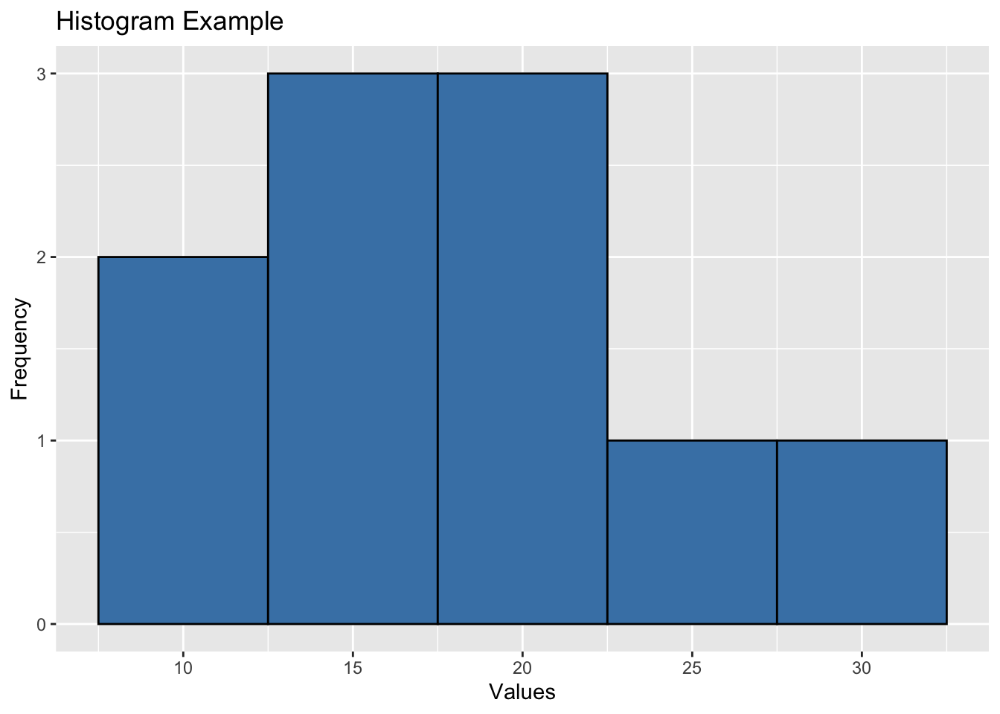

Topic 4: Programming statistical graphics
2023-10-25
In this topic in week 7, you will learn to plot using ggplot2 package (graphics) focus on:
- Histogram
- Scatter diagram
- Bar chart
- Box plot
- Line chart
Histogram
Histogram using ggplot2 in R Programming
ggplot2 is a powerful and popular data visualization package in R that provides a flexible and elegant way to create high-quality graphics. To create a histogram using ggplot2, you need to follow a specific workflow using the ggplot() function along with the geom_histogram() function.
Step-by-Step Workflow:
Load the necessary library: You need to load the ggplot2 library before using it.
- Prepare the data: Ensure you have the data in a data frame or tibble format with the variable you want to plot.
- Create the ggplot object: Use the ggplot() function to specify the data and aesthetic mappings for the plot.
- Add the geometry: Use the geom_histogram() function to create the histogram.
- Customize the plot (optional): You can customize the appearance of the plot using various ggplot2 functions like labs(), theme(), scale_x_continuous(), scale_y_continuous(), etc.
Example: Creating a Histogram with ggplot2
# Sample data
data <- data.frame(values = c(10, 15, 12, 18, 20, 25, 22, 17, 14, 30))
# Create the ggplot object and add the histogram geometry
ggplot(data, aes(x = values)) +
geom_histogram(fill = "steelblue", color = "black", bins = 5) +
labs(title = "Histogram Example", x = "Values", y = "Frequency")
In this example, we have a sample data frame named data with a single column values. We created a histogram using ggplot2 by specifying the data and aesthetic mappings in the ggplot() function and adding the histogram geometry with geom_histogram(). We customized the fill color, border color, and number of bins in the histogram. We also added a title and axis labels using labs().
Remember to replace data and values with your actual data frame and variable name in the ggplot2 code. You can further customize the appearance of the plot using additional ggplot2 functions to meet your specific visualization needs. ggplot2 provides a wide range of options for creating beautiful and informative histograms.
Scatter Plot
Scatterplot using ggplot2 in R Programming
ggplot2 is a powerful data visualization package in R that offers a flexible and intuitive way to create high-quality graphics. To create a scatterplot using ggplot2, you need to follow a specific workflow using the ggplot() function along with the geom_point() function.
Step-by-Step Workflow:
Load the necessary library: You need to load the ggplot2 library before using it.
- Prepare the data: Ensure you have the data in a data frame or tibble format with the variables you want to plot.
- Create the ggplot object: Use the ggplot() function to specify the data and aesthetic mappings for the plot.
- Add the geometry: Use the geom_point() function to create the scatterplot.
- Customize the plot (optional): You can customize the appearance of the plot using various ggplot2 functions like labs(), theme(), scale_x_continuous(), scale_y_continuous(), etc.
Example: Creating a Scatterplot with ggplot2
# Sample data
data <- data.frame(x_values = c(1, 2, 3, 4, 5, 6),
y_values = c(10, 15, 12, 18, 20, 25))
# Create the ggplot object and add the scatterplot geometry
ggplot(data, aes(x = x_values, y = y_values)) +
geom_point(color = "blue", size = 3) +
labs(title = "Scatterplot Example", x = "X-axis", y = "Y-axis")
In this example, we have a sample data frame named data with two columns x_values and y_values. We created a scatterplot using ggplot2 by specifying the data and aesthetic mappings in the ggplot() function and adding the scatterplot geometry with geom_point(). We customized the point color and size in the scatterplot. We also added a title and axis labels using labs().
Remember to replace data, x_values, and y_values with your actual data frame and variable names in the ggplot2 code. You can further customize the appearance of the plot using additional ggplot2 functions to suit your specific visualization needs. ggplot2 provides numerous options for creating attractive and informative scatterplots.
Bar chart
Bar Chart using ggplot2 in R Programming
ggplot2 is a popular and powerful data visualization package in R that offers a flexible and elegant way to create high-quality graphics. To create a bar chart using ggplot2, you need to follow a specific workflow using the ggplot() function along with the geom_bar() function.
Step-by-Step Workflow:
Load the necessary library: You need to load the ggplot2 library before using it.
- Prepare the data: Ensure you have the data in a data frame or tibble format with the variables you want to plot.
- Create the ggplot object: Use the ggplot() function to specify the data and aesthetic mappings for the plot.
- Add the geometry: Use the geom_bar() function to create the bar chart.
- Customize the plot (optional): You can customize the appearance of the plot using various ggplot2 functions like labs(), theme(), scale_x_discrete(), scale_y_continuous(), etc.
Example: Creating a Bar Chart with ggplot2
# Sample data
data <- data.frame(categories = c("Category 1", "Category 2", "Category 3", "Category 4"),
counts = c(20, 15, 30, 25))
# Create the ggplot object and add the bar chart geometry
ggplot(data, aes(x = categories, y = counts)) +
geom_bar(stat = "identity", fill = "steelblue") +
labs(title = "Bar Chart Example", x = "Categories", y = "Count")In this example, we have a sample data frame named data with two columns categories and counts. We created a bar chart using ggplot2 by specifying the data and aesthetic mappings in the ggplot() function and adding the bar chart geometry with geom_bar(). We customized the fill color of the bars in the chart. We also added a title and axis labels using labs().
Remember to replace data, categories, and counts with your actual data frame and variable names in the ggplot2 code. You can further customize the appearance of the plot using additional ggplot2 functions to meet your specific visualization needs. ggplot2 offers numerous options for creating visually appealing and informative bar charts.
Boxplot
Boxplot using ggplot2 in R Programming
ggplot2 is a popular data visualization package in R that offers a flexible and elegant way to create high-quality graphics. To create a boxplot using ggplot2, you need to follow a specific workflow using the ggplot() function along with the geom_boxplot() function.
Step-by-Step Workflow:
Load the necessary library: You need to load the ggplot2 library before using it.
- Prepare the data: Ensure you have the data in a data frame or tibble format with the variables you want to plot.
- Create the ggplot object: Use the ggplot() function to specify the data and aesthetic mappings for the plot.
- Add the geometry: Use the geom_boxplot() function to create the boxplot.
- Customize the plot (optional): You can customize the appearance of the plot using various ggplot2 functions like labs(), theme(), scale_x_discrete(), scale_y_continuous(), etc.
Example: Creating a Boxplot with ggplot2
# Sample data
data <- data.frame(groups = rep(c("Group 1", "Group 2", "Group 3"), each = 100),
values = c(rnorm(100, mean = 10, sd = 2),
rnorm(100, mean = 12, sd = 3),
rnorm(100, mean = 8, sd = 2.5)))
# Create the ggplot object and add the boxplot geometry
ggplot(data, aes(x = groups, y = values)) +
geom_boxplot(fill = "lightblue", color = "black") +
labs(title = "Boxplot Example", x = "Groups", y = "Values")
In this example, we have a sample data frame named data with two columns groups and values. We created a boxplot using ggplot2 by specifying the data and aesthetic mappings in the ggplot() function and adding the boxplot geometry with geom_boxplot(). We customized the fill color and border color of the boxes in the boxplot. We also added a title and axis labels using labs().
Remember to replace data, groups, and values with your actual data frame and variable names in the ggplot2 code. You can further customize the appearance of the plot using additional ggplot2 functions to meet your specific visualization needs. ggplot2 provides a wide range of options for creating visually appealing and informative boxplots.
Line chart
Line Chart using ggplot2 in R Programming
ggplot2 is a powerful data visualization package in R that provides a flexible and elegant way to create high-quality graphics. To create a line chart using ggplot2, you need to follow a specific workflow using the ggplot() function along with the geom_line() function.
Step-by-Step Workflow:
Load the necessary library: You need to load the ggplot2 library before using it.
- Prepare the data: Ensure you have the data in a data frame or tibble format with the variables you want to plot.
- Create the ggplot object: Use the ggplot() function to specify the data and aesthetic mappings for the plot.
- Add the geometry: Use the geom_line() function to create the line chart.
- Customize the plot (optional): You can customize the appearance of the plot using various ggplot2 functions like labs(), theme(), scale_x_continuous(), scale_y_continuous(), etc.
Example: Creating a Line Chart with ggplot2
# Sample data
data <- data.frame(time = c(1, 2, 3, 4, 5, 6),
values = c(10, 15, 12, 18, 20, 25))
# Create the ggplot object and add the line chart geometry
ggplot(data, aes(x = time, y = values)) +
geom_line(color = "blue", size = 1.5) +
labs(title = "Line Chart Example", x = "Time", y = "Values")## Warning: Using `size` aesthetic for lines was deprecated in ggplot2 3.4.0.
## ℹ Please use `linewidth` instead.
## This warning is displayed once every 8 hours.
## Call `lifecycle::last_lifecycle_warnings()` to see where this warning was
## generated.In this example, we have a sample data frame named data with two columns time and values. We created a line chart using ggplot2 by specifying the data and aesthetic mappings in the ggplot() function and adding the line chart geometry with geom_line(). We customized the line color and size in the chart. We also added a title and axis labels using labs().
Remember to replace data, time, and values with your actual data frame and variable names in the ggplot2 code. You can further customize the appearance of the plot using additional ggplot2 functions to meet your specific visualization needs. ggplot2 provides numerous options for creating visually appealing and informative line charts.
Lab Quiz
Topic 1,2,3 15% of ongoing assessment